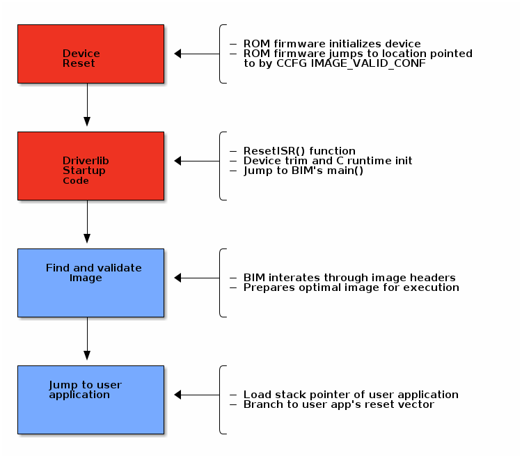

Boot Image Manager (BIM)¶
The Boot Image Manager resides on the OAD target, and is responsible for loading new images after a download has completed. The BIM executes on a device reset and determines if a firmware update needs to be applied. If no update is being applied, then the BIM will transfer program execution to the main application image.
Overview & Software Architecture¶
BIM is a fully executable application that is independent of any high level protocol stack or user application. It is guaranteed to run on boot. BIM enables power loss fault tolerance during OAD. If the device power is lost during OAD, the BIM will still be able to run from reset and revert to a working image if one is available. The BIM is intended to reside permanently on the chip and cannot be updated via the OAD process.
BIM executes before kernel initialization takes place so the design is single threaded and bare metal. Hardware access is accomplished through driverlib.
As a separate application, BIM requires its own interrupt vector table and linker file. It will produce a fully executable image that must be merged with the user application image in order to create a functional OAD enabled firmware system.
In general, BIM is responsible for finding and analyzing OAD image header. From a high level BIM does the following:
- Check for newly downloaded images from a recent OAD.
- If available, copy the newly downloaded images to their target location in internal flash
- Dynamically locate the entry point of the valid image and jump to it
The following section will cover the BIM boot procedure and image checking routine in detail.
Boot procedure¶
On reset, the software in the ROM of the CC2640R2 will execute basic startup
routines, and then jump to the location pointed to by the CCFG’s
IMAGE_VALID_CONF field. More information about the fields of the CCFG and
the generic device boot procedure is detailed in the CC13x0 CC26x0 SimpleLink Wireless MCU Technical Reference Manual. The BIM is setup to
link the CCFG as part of its image. This is another failsafe mechanism to ensure
that a CCFG is always present on the device. To enable this feature, BIM uses a
custom CCFG where the value of the IMAGE_VALID_CONF field points to BIM’s
reset vector table. More information about the CCFG and the IMAGE_VALID_CONF
is available in the CC13x0 CC26x0 SimpleLink Wireless MCU Technical Reference Manual.
In summary, the boot ROM code will jump to the ResetISR() in BIM’s
vector table. Being a bare metal application, BIM uses the toolchain
specific boot code provided in driverlib.
The reset ISR code can be found in driverlib under the startup folder. In
summary, it performs the following:
- Device specific trim functionality
- C/C++ runtime initialization
- Jump to BIM’s
main()
See the figure below for a graphical representation of the boot procedure. Red boxes indicate driverlib/ROM code, blue boxes represent BIM code.

Device trim¶
The device trim function is responsible for tuning hardware settings of the device to ensure stable and optimal operation. It must run at least once every time the device boots, but may be ran more than once. Parts of the trim function are dependent on the CCFG which is another reason why it is linked with BIM.
By default, both BIM and the user application will trim the device.
This offers the benefit that the user application may link to a newer version of the trim function. This comes at the cost of a small amount of additional flash in the user application.
Warning
It is recommend to leave device trim enabled in both the BIM and the user application to enable development via a debugger without a BIM present.
Removing the device trim for the user application is only suggested for final
production code. Additional validation should be performed on images with
additional trimming disabled. App level trimming can be disabled by modifying
the Boot module within the kernel’s *.cfg file.
Halt In Boot (HIB)¶
There is a bug with the emulation software package that would cause the processor to enter Halt In Boot (HIB) on the next bootup when previously connected to JTAG. In the case of OAD, that is when a system reset is invoked at the end of an OAD procedure.
Note
This only affects devices connected to JTAG, such as the XDS110 on LaunchPads. This issue should not appear in field devices or devices that are not connected to JTAG in general.
The reason why the bug occurs is that the TCK pin (which powers up the JTAG power domain) is left in tri-state. When a system reset occurs after an active debug connection, the TCK pin could potentially experience unwanted toggling from noise. HIB erroneously detects this as debug activity, and subsequently halts the processor.

Figure 92. Reset problems after programming with JTAG
A symptom of this bug occurring is that OAD does not reboot into BIM after a successful OAD. A temporary workaround is to simply unplug/replug or hard reset the device, and the device will boot as normal.
However, a permanent fix is available. As of version 8.0.27.9 of the emulation software package, the XDS110 emulator now drives the TCK pin high instead of leaving it in tri-state. This removes any unwanted toggling on the TCK pin after a system reset, which no longer triggers HIB.
To update the emulation software packages, start by downloading the latest XDS Emulation Software Package. Then, depending on which tool you are using, follow the corresponding step-by-step guide below.
- For Flash Programmer 2:
- Run the above installer
- Copy the contents of the emulation software package to
<Flash Programmer 2>/config/xds/*
- For Code Composer Studio:
- Run the above installer
- Follow the steps described in Section Manual CCS Installation from the XDS Emulation Software Package page
- For IAR:
- Run the above installer
- Change the debugger options of the project to point to the newly installed package
{kind=link}
Figure 93. Update XDS emulation software package in IAR
Secure BIM¶
There is a security extension to BIM which is called Secure BIM. The Secure BIM adds functionality to authenticate secure OAD images and enable secure boot of the main application firmware image. The only difference between Secure BIM and Unsecure BIM is an added security step during the BIM procedure.
In the Secure BIM procedure, the added step checks the security of the new image. The image signature is verified, and is either accepted or rejected. If accepted, the BIM procedure continues as normal; else, the image is rejected and the BIM procedure searches for an another image. The security check step happens after the CRC check.
Note
Secure BIM will always reject new OAD images that are not signed. However, Unsecure BIM will accept both signed and unsigned OAD images.
The Elliptic Curve Digital Signature Algorithm (ECDSA) is used to sign and verify Secure OAD images. More specifically, the ECSDA-P256 algorithm is implemented. Refer to Section Generating New Security Keys (Embedded) for how to generate security keys.
What is important to understand is that the signature verification is always done during the BIM procedure. The application has no way of verifying whether a new secure OAD image has a valid signature or not. This means it is possible for a new secure OAD image to have an OK CRC check, but an invalid signature. The application will still see this as a valid image, but will be rejected during the BIM procedure.
Locating and Preparing a user application¶
Besides booting and trimming the device, BIM’s primary function is to find and prepare a user application to run on the CC2640R2. The method by which this is performed depends on the type of OAD that is being done (i.e. on-chip or offchip). Please the following sections for each platform.
Note
As a convention, the vector table comes immediately after the image header in OAD enabled images. The BIM and the image header are tightly coupled, refer to the OAD Image Header chapter for more detail on the image header vector and its fields.
The BIM application is required for OAD target operations but is not automatically
imported with the OAD sample applications. Therefore the BIM project must be loaded
into the workspace and downloaded separately. The BIM project can be located
inside <SDK_DIR>/examples/nortos/<LaunchPad>/common/bim/bim_<on/offchip>/<ccs/iar>
depending on the device and configuration used.
This sample application is flashed at the last page of flash along with
a modified CCFG register forcing the start address to be the BIM. This allows BIM
execution and decides the boot sequence when the MCU is powered. The CCFG used by BIM
is located at <SDK_DIR>/examples/nortos/<LaunchPad>/common/bim/bim_<on/off>chip/src
and its linker file at <SDK_DIR>/source/ti/common/cc26xx/<ccs/iar>
This BIM application must be downloaded along with the OAD application and neither project should erase or overwrite the flash memory contents of the other.